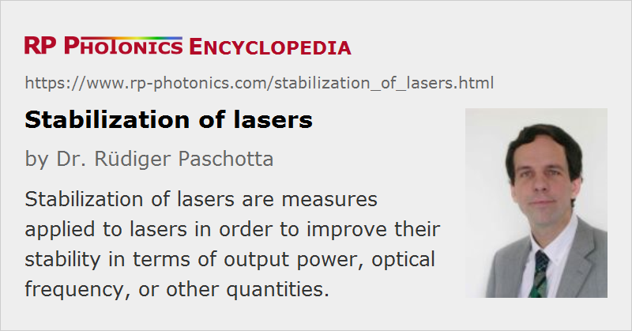

Stabilization of Lasers
Definition: measures applied to lasers in order to improve their stability in terms of output power, optical frequency, or other quantities
German: Stabilisierung von Lasern
Categories: lasers, fluctuations and noise, methods
How to cite the article; suggest additional literature
Author: Dr. Rüdiger Paschotta
As lasers exhibit various kinds of laser noise, which can be detrimental in applications, it is sometimes necessary to use techniques for suppressing noise and stabilizing certain laser parameters. There are active and passive stabilization schemes, as discussed in the following.
See also the article on synchronization of lasers, which treats both timing and phase synchronization.
Active Laser Stabilization
Active stabilization schemes usually involve some kind of electronic feedback (or sometimes feedforward) system, where fluctuations of some parameters are converted to an electronic signal, which is then used to act on the laser in some way.
Examples are:
- The output power of a laser may be stabilized with a scheme as shown in Figure 1. The laser power is monitored with a photodiode and corrected e.g. via control of the pump power or the losses in or outside the laser resonator. In this way, both spiking after turn-on and the intensity noise under steady-state conditions can be reduced. Note that it is also possible to reduce intensity noise by acting on the output beam instead of the laser itself; see the article on noise eaters.
- The optical frequency of a single-frequency laser, or the frequency of one line of the frequency comb from a mode-locked laser, can be stabilized via resonator length control. The feedback signal can be obtained e.g. by recording a beat note with a second laser, by measuring the transmission or reflection of a very stable reference cavity or an interferometer, or by measuring the transmission of a gas cell (e.g. an iodine cell), possibly using Doppler-free laser absorption spectroscopy. A frequently used technique for generating an error signal with a reference cavity is the Pound–Drever–Hall method [2, 3], using a weak phase modulation of the light which is sent to the reference cavity. A scheme not requiring such modulation is the Hänsch–Couillaud method [1].
- The stabilization of the carrier–envelope offset phase or frequency of a mode-locked laser (CEO stabilization) can be based on, e.g., a phase measurement with an f−2f interferometer and feedback via some wedge or tilted mirror in the laser resonator. This kind of stabilization is important for frequency metrology.
- The timing of the pulses (→ timing jitter) from a mode-locked laser can be monitored by comparing the phases of a photodiode signal and of an electronic reference oscillator, and stabilized e.g. via cavity length control.
- Stabilization of the pointing direction of the output beam is possible via a beam position measurement (e.g. with a four-quadrant photodiode) and correction via piezo-controlled resonator mirrors.
The stability which is achieved with such active systems is determined by factors such as photodetection noise, the bandwidth of control elements, the design of the feedback electronics, and the stability of the reference standards (e.g. optical reference cavities).
Passive Laser Stabilization
Passive schemes do not involve electronics and are based on purely optical effects. Examples are:
- The frequency of a laser can be stabilized via optical feedback from a stable reference cavity. (This may also be considered as using an extended laser resonator, being a kind of composite cavity.)
- Synchronization of two mode-locked lasers is possible via cross-phase modulation in a Kerr medium, in which the intracavity pulses of both lasers meet.
The optical frequency of a laser may also be stabilized by injection locking, i.e., injecting a beam with a highly stable optical frequency from another laser.
Suppliers
The RP Photonics Buyer's Guide contains 20 suppliers for laser stabilization devices. Among them:
Questions and Comments from Users
Here you can submit questions and comments. As far as they get accepted by the author, they will appear above this paragraph together with the author’s answer. The author will decide on acceptance based on certain criteria. Essentially, the issue must be of sufficiently broad interest.
Please do not enter personal data here; we would otherwise delete it soon. (See also our privacy declaration.) If you wish to receive personal feedback or consultancy from the author, please contact him e.g. via e-mail.
By submitting the information, you give your consent to the potential publication of your inputs on our website according to our rules. (If you later retract your consent, we will delete those inputs.) As your inputs are first reviewed by the author, they may be published with some delay.
Bibliography
| [1] | T. W. Hänsch and B. Couillaud, “Laser frequency stabilization by polarization spectroscopy of a reflecting reference cavity”, Opt. Commun. 35 (3), 441 (1980) (Hänsch–Couillaud technique), doi:10.1016/0030-4018(80)90069-3 |
| [2] | R. W. P. Drever, J. L. Hall et al., “Laser phase and frequency stabilization using an optical resonator”, Appl. Phys. B 31, 97 (1983), doi:10.1007/BF00702605 |
| [3] | G. C. Bjorklund et al., “Frequency-modulation (FM) spectroscopy”, Appl. Phys. B 32 (3), 145 (1983), doi:10.1007/BF00688820 |
| [4] | C. Salomon et al., “Laser stabilization at the millihertz level”, J. Opt. Soc. Am. B 5 (8), 1576 (1988), doi:10.1364/JOSAB.5.001576 |
| [5] | J. Dirscherl et al., “A dye laser spectrometer for high resolution spectroscopy”, Opt. Commun. 91, 131 (1992), doi:10.1016/0030-4018(92)90114-7 |
| [6] | T. Day et al., “Sub-hertz relative frequency stabilization of two diode laser-pumped Nd:YAG lasers locked to a Fabry–Pérot interferometer”, IEEE J. Quantum Electron. 28 (4), 1106 (1992), doi:10.1109/3.135234 |
| [7] | N. Uehara and K. I. Ueda, “193-mHz beat linewidth of frequency-stabilized laser-diode-pumped Nd:YAG ring lasers”, Opt. Lett. 18 (7), 505 (1993), doi:10.1364/OL.18.000505 |
| [8] | C. C. Harb et al., “Suppression of the intensity noise in a diode-pumped neodymium:YAG nonplanar ring laser”, IEEE J. Quantum Electron. 30 (12), 2907 (1994), doi:10.1109/3.362718 |
| [9] | S. Seel et al., “Cryogenic optical resonators: a new tool for laser frequency stabilization at the 1 Hz level”, Phys. Rev. Lett. 78 (25), 4741 (1997), doi:10.1103/PhysRevLett.78.4741 |
| [10] | Y. Shevy and H. Deng, “Frequency-stable and ultranarrow-linewidth semiconductor laser locked directly to an atom-cesium transition”, Opt. Lett. 23 (6), 472 (1998), doi:10.1364/OL.23.000472 |
| [11] | B. C. Young et al., “Visible lasers with subhertz linewidths”, Phys. Rev. Lett. 82 (19), 3799 (1999), doi:10.1103/PhysRevLett.82.3799 |
| [12] | S. Kasapi et al., “Sub-shot-noise frequency-modulation spectroscopy by use of amplitude-squeezed light from semiconductor lasers”, J. Opt. Soc. Am. B 17 (2), 275 (2000), doi:10.1364/JOSAB.17.000275 |
| [13] | E. D. Black, “An introduction to Pound–Drever–Hall laser frequency stabilization”, Am. J. Phys. 69 (1), 79 (2001), doi:10.1119/1.1286663 |
| [14] | F. W. Helbing et al., “Carrier–envelope offset phase-locking with attosecond timing jitter”, J. Sel. Top. Quantum Electron. 9 (4), 1030 (2003), doi:10.1109/JSTQE.2003.819104 |
| [15] | St. A. Webster et al., “Subhertz-linewidth Nd:YAG laser”, Opt. Lett. 29 (13), 1497 (2004), doi:10.1364/OL.29.001497 |
| [16] | J. Rollins et al., “Solid-state laser intensity stabilization at the 10−8 level”, Opt. Lett. 29 (16), 1876 (2004), doi:10.1364/OL.29.001876 |
| [17] | H. Stoehr et al., “Diode laser with 1 Hz linewidth”, Opt. Lett. 31 (6), 736 (2006), doi:10.1364/OL.31.000736 |
| [18] | F. Seifert et al., “Laser power stabilization for second-generation gravitational wave detectors”, Opt. Lett. 31 (13), 2000 (2006), doi:10.1364/OL.31.002000 |
| [19] | F. Kéfélian et al., “Ultralow-frequency-noise stabilization of a laser by locking to an optical fiber-delay line”, Opt. Lett. 34 (7), 914 (2009), doi:10.1364/OL.34.000914 |
| [20] | P. Kwee et al., “Shot-noise-limited laser power stabilization with a high-power photodiode array”, Opt. Lett. 34 (19), 2912 (2009), doi:10.1364/OL.34.002912 |
| [21] | N. Satyan et al., “Phase noise reduction of a semiconductor laser in a composite optical phase-locked loop”, Opt. Eng. 49 (12), 124301 (2010), doi:10.1117/1.3518077 |
| [22] | Y. Zhao et al., “Sub-Hertz frequency stabilization of a commercial diode laser”, Opt. Commun. 283, 4696 (2010), doi:10.1016/j.optcom.2010.06.079 |
| [23] | P. Kwee, B. Willke and K. Danzmann, “New concepts and results in laser power stabilization”, Appl. Phys. B 102 (3), 515 (2011), doi:10.1007/s00340-011-4399-1 |
| [24] | R. Paschotta, “Noise in Laser Technology”. Part 1 – Intensity and Phase Noise; Part 2: Fluctuations in Pulsed Lasers; Part 3: Beam Pointing Fluctuations |
See also: laser noise, intensity noise, spiking, phase noise, linewidth, noise eaters, lasers, injection locking, carrier–envelope offset, frequency combs, frequency metrology, synchronization of lasers
and other articles in the categories lasers, fluctuations and noise, methods
|  |
If you like this page, please share the link with your friends and colleagues, e.g. via social media:
These sharing buttons are implemented in a privacy-friendly way!